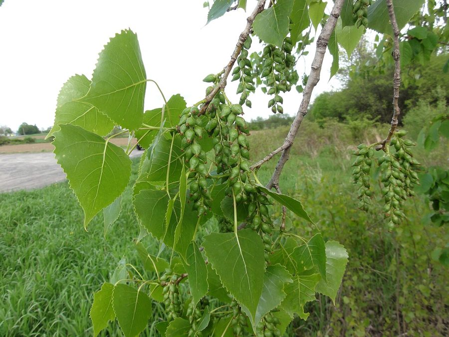

पॉपुलरPoplar
Populus deltoides · Salicaceae · FLR-0126

- Scientific nameवैज्ञानिक नाम
- Populus deltoides Bartr. ex Marsh.
- Familyकुल
- Salicaceae
- Hindiहिंदी
- पॉपुलर
- Local namesस्थानीय नाम
- poplar, popular, poplar ped, safeda poplar
- Status hereयहाँ की स्थिति
- cultivated
- Movementआवागमन
- Resident, here all year
- IUCNIUCN
- not evaluated
- Reviewसमीक्षा
- audited and independently read
When to look कब देखें
Present all year.साल भर मौजूद।
Uses and possibilities उपयोग और संभावनाएँ
Drawn from the documented uses in the profile below, where each is labelled traditional, current or a research lead. All uses →
पॉपुलर / Poplar
Populus deltoides Bartr. ex Marsh. — Salicaceae
पॉपुलर — अमेरिका से आया सीधा, तेज़ी से बढ़ने वाला पेड़, जिसके पत्ते त्रिकोणीय होते हैं। पूर्वी उत्तर प्रदेश में खेतों की सीमा पर और नहरों के किनारे लगाए जाते हैं। हल्की, नरम लकड़ी दियासलाई, कागज़ और पैकिंग में काम आती है। पेड़ का बीज रुई जैसे पदार्थ से लिपटा होता है जो हवा में उड़ता है।
Quick Identification त्वरित पहचान
| Feature | Description |
|---|---|
| Size | Tall, deciduous tree, 20–35 m, narrow columnar crown |
| Leaves | Deltoid (triangular), 5–10 cm, with serrate margins, flattened petioles allowing leaf tremor |
| Flowers | Catkins, male and female on separate trees; before leaves in spring |
| Fruits | Capsules releasing cottony seeds (hence "cottonwood") |
| Bark | Smooth, greenish-grey when young; furrowed grey-brown when old |
| The test | Triangular leaves with flattened petioles; trembling leaves in the slightest breeze |
Field tip: Look for a tall, columnar tree with trembling triangular leaves; in spring, look for the catkins before the leaves appear.
हिंदी — कैसे पहचानें: त्रिकोणीय पत्ती, हवा में कँपती है, सीधा तना।
Morphology आकारिकी
Biometrics:
| Measurement | Range |
|---|---|
| Height | 20–35 m |
| Trunk diameter | 60–100 cm |
| Leaf length | 5–10 cm |
| Leaf width | 4–8 cm |
Trunk and bark: Straight, smooth when young, furrowed when old. Wood pale, soft, light, easily worked.
Leaves: Deciduous, deltoid, serrate margins, flattened petiole allowing movement.
Flowers: Catkins, dioecious (male and female on different trees); appear before leaves.
Fruits: Capsules releasing numerous seeds in cottony down.
हिंदी: त्रिकोणीय पत्ती, पतली डंडी से हिलती है, नरम हल्की लकड़ी।
Behaviour & Ecology व्यवहार और पारिस्थितिकी
A North American tree, introduced to South Asia for timber. Fast-growing, tall, and straight; widely planted as a timber tree in irrigation areas. Tolerates poorly drained soils and is often planted along canals and rivers.
हिंदी: विदेशी, तेज़ी से बढ़ता है, नहरों के पास लगाया जाता है।
Life Cycle / Phenology जीवन चक्र
| Month / season | Event |
|---|---|
| January–February | Leaf fall; catkins appear |
| March–April | New leaves |
| May–October | Full canopy; rapid growth |
| November | Leaf fall |
Pests and Diseases कीट और रोग
- Minimal serious pests in India.
Agricultural / Human Relevance कृषि प्रासंगिकता
Uses:
- Timber. Light, soft wood used for matches, paper pulp, and packing materials.
- Windbreak. Tall trees planted in rows for wind protection of crops.
Today. Common in timber plantations and roadside windbreaks.
हिंदी: लकड़ी दियासलाई, कागज़, पैकिंग में। हवा रोकने के लिए लगाया जाता है।
Expected Locally स्थानीय रूप से अपेक्षित
Not a field record. Written from published accounts for eastern Uttar Pradesh. No confirmed local sighting yet — if you have seen it, that is what the atlas needs.
अभी तक स्थानीय पुष्टि नहीं। यह विवरण प्रकाशित स्रोतों से है, किसी अवलोकन से नहीं।
Common in agricultural areas and along canals in Basti and Ayodhya districts.
Distribution वितरण
Global range: Native to North America; introduced throughout Asia.
In India: Widespread in north and eastern India.
In Uttar Pradesh: Common in irrigation areas.
In Basti district / eastern UP: Frequent along canals and roads.
Research Questions शोध प्रश्न
Anyone can investigate these | कोई भी इन प्रश्नों की जाँच कर सकता है
- How fast does poplar grow in your canal-side conditions? — Plant and measure.
- When do the seeds release their cotton? — Watch in spring.
- How much timber does one tree yield? — Harvest and measure.
Similar Species मिलती-जुलती प्रजातियाँ
| Species | How to tell apart | हिंदी |
|---|---|---|
| Willow (Salix alba) | Leaves linear-lanceolate, not deltoid; smaller tree | लंबी पत्ती, छोटा पेड़ |
Field rule: A tall, columnar tree with trembling triangular leaves is poplar.
Taxonomy & Classification वर्गीकरण
Original description. Described by Humphry Marshall in Arbustrum Americanum (1785), under the name proposed by William Bartram, hence the authority W. Bartram ex Marshall.
Subspecies. Variable; several subspecies in North America.
Family and order placement. Salicaceae, order Malpighiales.
IUCN status rationale. Not evaluated; widely cultivated.
Photo Gallery फोटो गैलरी
Photos needed आवश्यक फोटो
- [ ] Whole tree (पूरा पेड़)
- [ ] Triangular leaves (पत्ती)
- [ ] Catkins in spring (वसंत में कलियाँ)
References संदर्भ
- Marshall, H. (1785). Arbustrum Americanum. Philadelphia. [original description]
- Eckenwalder, J.E. (1996). Systematics and Evolution of Populus. In: Biology of Populus. NRC Research Press, Ottawa.
- GBIF Occurrence Data — Populus deltoides, India (2026).
Source file: species/flora/trees/poplar.md